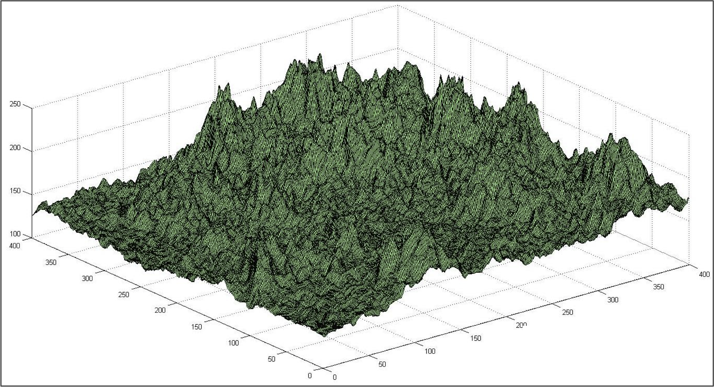

Ab initio Protein Structure Prediction
Distributing the work of protein structure prediction around the world
The determination of the SARS-CoV-2 spike protein’s structure was remarkable because in many senses it was a community effort, dividing the computational heavy lifting over thousands of volunteers’ computers around the world. Two leading structure prediction projects, Rosetta@home and Folding@home, encourage volunteers to download their software and contribute to a gigantic distributed effort to predict protein shape. Even with a modest laptop, a user can donate some of their computer’s idle resources to contribute to the problem of protein structure prediction. But how does this software work?
Predicting a protein’s structure using only its amino acid sequence is called ab initio structure prediction (ab initio is from the Latin for “from the beginning”). In this lesson, we will explain a little about how ab initio structure prediction algorithms work.
As we dive into structure prediction, we should be more precise about two things. First, we will specify what we mean by the “structure” of a protein. Second, although we know that a polypeptide always folds into the same final three-dimensional shape, we have not said anything about why a protein folds in a certain way. We will need a better understanding of how the physicochemical properties of amino acids affect a protein’s final structure.
The four levels of protein structure
“Protein structure” is a broad term that encapsulates four different levels of description. A protein’s primary structure refers to the amino acid sequence of the polypeptide chain. The primary structure of human hemoglobin subunit alpha can be downloaded here, and the primary structure of the SARS-CoV-2 spike protein can be downloaded here.
A protein’s secondary structure describes its highly regular, repeating substructures that serve as intermediate structures forming before the overall protein structure comes together. The two most common such substructures, shown in the figure below, are alpha helices (left) and beta sheets (right). Alpha helices occur when nearby amino acids wrap around to form a tube-like structure; beta sheets occur when nearby amino acids line up side-by-side to form a sheet-like structure.
 General shape of secondary structure alpha helices (left) and beta sheets (right). Source: Cornell, B. (n.d.). https://ib.bioninja.com.au/higher-level/topic-7-nucleic-acids/73-translation/protein-structure.html
General shape of secondary structure alpha helices (left) and beta sheets (right). Source: Cornell, B. (n.d.). https://ib.bioninja.com.au/higher-level/topic-7-nucleic-acids/73-translation/protein-structure.html
A protein’s tertiary structure describes its final 3D shape after the polypeptide chain has folded and is stable. Throughout this module, when discussing the “shape” or “structure” of a protein, we are almost exclusively referring to its tertiary structure. The figure below shows the tertiary structure of human hemoglobin subunit alpha. Note that for the sake of simplicity, the figure does not show the positions of every atom in the protein but rather represents the protein shape as a composition of secondary structures.
 The tertiary structure of human hemoglobin subunit alpha. Within the structure are multiple alpha helix secondary structures. Source: https://www.rcsb.org/structure/1SI4.
The tertiary structure of human hemoglobin subunit alpha. Within the structure are multiple alpha helix secondary structures. Source: https://www.rcsb.org/structure/1SI4.
Finally, some proteins have a quaternary structure, which describes the protein’s interaction with other copies of itself to form a single functional unit, or a multimer. Many proteins do not have a quaternary structure and function as an independent monomer. The figure below shows the quaternary structure of hemoglobin, which is a multimer consisting of two alpha subunits and two beta subunits.
 The quaternary structure of human hemoglobin, which consists of two alpha subunits (shown in red) and two beta subunits (shown in blue). Source: https://commons.wikimedia.org/wiki/File:1GZX_Haemoglobin.png.
The quaternary structure of human hemoglobin, which consists of two alpha subunits (shown in red) and two beta subunits (shown in blue). Source: https://commons.wikimedia.org/wiki/File:1GZX_Haemoglobin.png.
{kind=link}
As for SARS-CoV and SARS-CoV-2, the spike protein is a homotrimer, meaning that it is formed of three essentially identical units called chains, each one translated from the corresponding region of the coronavirus’s genome. When we talk about identifying the structure of the spike protein in this module, we typically are referring to the structure of a single chain.
The structural units making up proteins are often hierarchical, and the spike protein is no exception. Each spike protein chain is a dimer, consisting of two subunits called S1 and S2. Each of these subunits further divides into protein domains, distinct structural units within the protein that fold independently and are typically responsible for a specific interaction or function. For example, the SARS-CoV-2 spike protein has a receptor binding domain (RBD) located on the S1 subunit that is responsible for interacting with the human ACE2 enzyme; the rest of the protein does not come into contact with ACE2. We will say more about the RBD soon.
Proteins seek the lowest energy conformation
Now that we know a bit more about how protein structure is defined, we will discuss why proteins fold in a certain way every time. In other words, what are the factors driving nature’s magic protein folding algorithm?
Amino acids’ variety of side chains causes the amino acids to have different chemical properties, which can lead to different conformations being more chemically “preferable” than others. For example, the table below shows the twenty standard amino acids occurring in proteins grouped by chemical properties. Nine of these amino acids are hydrophobic (also called non-polar), meaning that their side chains tend to be repelled by water, and as a result we tend to find these amino acids sheltered from the environment on the interior of the protein.
 A chart of the twenty amino acid grouped by chemical properties. The side chain of each amino acid is highlighted in blue. Source: OpenStax Biology. http://cnx.org/contents/185cbf87-c72e-48f5-b51e-f14f21b5eabd@14.1.
A chart of the twenty amino acid grouped by chemical properties. The side chain of each amino acid is highlighted in blue. Source: OpenStax Biology. http://cnx.org/contents/185cbf87-c72e-48f5-b51e-f14f21b5eabd@14.1.
We can therefore view protein folding as finding the tertiary structure that is the most stable given a polypeptide’s primary structure. A central theme of the previous module on bacterial chemotaxis was that a system of chemical reactions moves toward equilibrium. The same principle is true of the magic folding algorithm; when a protein folds into its final structure, it is obtaining a conformation that minimum is as chemically stable as possible. The polypeptide starts as just a bonded chain of amino acids, but it ends as a folded protein, incorporating bonds and interactions between different parts of the protein along the way.
To be more precise, the potential energy (sometimes called free energy) of a molecule is the energy stored within an object due to its position, state, and arrangement. In molecular mechanics, the potential energy is made up of the sum of bonded energy and non-bonded energy.
Bonded energy derives from the protein’s covalent bonds, as well as the angles of bonds between adjacent amino acids, and the torsion angles that we saw in the previous lesson, as the protein bends and twists.
Non-bonded energy comprises electrostatic interactions (Coulomb potential) and van der Waals interactions (Lennard-Jones potential). Electrostatic interactions refer to the attraction and repulsion force from the electric charge between pairs of atoms. For example, nonpolar amino acids are repelled by water, which is polar, meaning that its constituent atoms have electric charges. Because a water molecule’s oxygen atom has a negative charge and its hydrogen atoms have a positive charge, the molecule is not attracted to a nonpolar molecule, since opposite charges in the two molecules will not attract. As for van der Waals interactions, atoms are dynamic systems. The electrons are constantly buzzing around the nucleus, and at any given moment, they could be unevenly distributed on one side of the nucleus. Because electrons are negatively charged, the atom will have a temporary negative charge on the side with the excess electrons (and a temporary positive charge on the opposite side). These temporary charges are called induced dipoles, and van der Waals interactions refer to the attraction and repulsion between atoms because of these induced dipoles.
 An illustration of how induced dipoles and therefore van der Waals forces arise from random fluctuations in the positions of electrons. Source: http://universe-review.ca/F12-molecule12.htm.
An illustration of how induced dipoles and therefore van der Waals forces arise from random fluctuations in the positions of electrons. Source: http://universe-review.ca/F12-molecule12.htm.
As the protein folds, it seeks a conformation of lowest total potential energy based on all these forces. For a simple analogy, imagine a ball on a slope, as shown in the following figure. Even if the ball bounces around, it will tend to move down the slope. In this analogy, the lower points on the slope correspond to lower energy conformations of a polypeptide.
 An analogy for a protein folding into a lowest energy structure is a ball on a hill. As the ball is more likely to move down into a valley, a protein is more likely to fold into a low-energy conformation.
An analogy for a protein folding into a lowest energy structure is a ball on a hill. As the ball is more likely to move down into a valley, a protein is more likely to fold into a low-energy conformation.
Modeling ab initio structure prediction as an exploration problem
Although a host of different algorithms have been developed for ab initio protein structure through the years, these algorithms all find themselves solving a similar problem.
Biochemical research has contributed to the development of scoring functions called force fields that compute the potential energy of a candidate protein shape. As a result, for a given choice of force field, we can think of ab initio structure prediction as solving the following problem: given a primary structure of a polypeptide, find its tertiary structure having minimum energy. This problem exemplifies an optimization problem, where we look for an object maximizing or minimizing some function subject to restraints.
This formulation of protein structure may not strike you as similar to anything that we have done before in this course. However, consider a bacterium exploring an environment for food, as we did in the previous module on chemotaxis. Every point in the bacterium’s “search space” is characterized by a concentration of attractant at that point, and the bacterium’s goal is to reach the point of greatest attractant concentration.
In the case of structure prediction, our search space is the collection of all possible conformations of a given protein. And each point in this search space is characterized by the energy of the conformation at the point. Just as we imagined a ball rolling down a hill to find lower energy, we can now imagine “exploring” this space of all conformations in order to find the conformation of lowest energy. This analogy is illustrated in the hypothetical figure below, in which the height of each point is the energy of the associated conformation; our goal, then, is to find the lowest point in this space.
 We can imagine each conformation of a given protein as occupying a point in a landscape, in which the elevation of a point corresponds to the energy of the conformation at that point. Courtesy: David Beamish.
A local search algorithm for ab initio structure prediction
Now that we have conceptualized finding the most stable protein structure as exploring a search space, our next question is how to develop an algorithm to explore this space. Continuing the analogy to chemotaxis, our idea is to adapt E. coli’s clever exploration algorithm from a previous lesson to our purposes. That is, at every step, we need to sense the “direction” in which the energy function decreases by the most, and then move in this direction.
Adapting this exploration algorithm to protein structure prediction requires us to develop a notion of what it means to consider the points “near” a given conformation in a protein search space. Many ab initio algorithms will start at an arbitrary initial conformation and then make a variety of minor modifications to that structure (i.e., nearby points in the space), updating the current conformation to the modification that produces the greatest decrease in free energy. These algorithms then iterate the process of moving in the greatest of greatest energy decrease until we reach a conformation for which no nearby points reduce the free energy. Such an approach for structure prediction falls into a broad category of optimization algorithms called local search algorithms.
Yet returning to the chemotaxis analogy, imagine what happens if we were to place many small sugar cubes and one large sugar cube into the bacterium’s environment. The bacterium will sense the gradient not of the large sugar cube but of its nearest attractant. As a result, because the smaller food sources outnumber the larger food source, the bacterium will likely not move to the point of greatest attractant concentration. In terms of bacterial exploration, this is a feature, not a bug; if the bacterium exhausts one food source, then it will just move to another. But in terms of protein structure prediction, we should be worried of winding up in such a local minimum, or a point of our search space for which no “neighboring” points have smaller score.
STOP: Do you see any ways in which we could improve our local search approach for structure prediction?
Fortunately, we can modify our local search algorithm in a variety of ways. First, because the initial conformation chosen has a huge influence on the final conformation that we return, we could run the algorithm multiple times with different starting conformations. This is analogous to allowing multiple bacteria to explore their environment at different starting points. Second, by allowing ourselves to move to a conformation with greater potential energy with some probability, we would give our local search algorithm a chance to “bounce” out of a local minimum. In an approach called simulated annealing, which is borrowed from metallurgy, we reduce the probability of increasing the free energy over time, so that the likelihood of bouncing out of a local minimum decreases over time, and eventually we will settle into a final conformation. Once again, randomness helps us solve practical problems!
Applying an ab initio algorithm to a protein sequence
In the tutorial linked below, we will use the web interface of a software resource called QUARK to run an ab initio structure prediction algorithm. QUARK is even more sophisticated than the algorithm discussed in the previous section. For example, its algorithm applies a combination of multiple scoring functions to look for the lowest energy conformation.
Despite the sophistication of software like QUARK, the search space of all conformations is so large (recall Levinthal’s paradox from the previous lesson) that accurately predicting large protein structures remains very difficult. Accordingly, many ab initio x restrict the length of a protein sequence. This is the case for QUARK, which limits us to 200 amino acids. Since the SARS-CoV-2 spike protein contains 1281 amino acids, we will instead demonstrate how to use this software on the shorter human hemoglobin subunit alpha.
Toward a faster approach for protein structure prediction
The figure below shows the top five structures produced by QUARK for human hemoglobin subunit alpha, along with the protein’s experimentally verified structure. It takes a keen eye to see any differences between these structures. We conclude that although ab initio prediction is slow, it is still able to accurately reconstruct a model of this protein from its amino acid sequence.
 A protein structure of human hemoglobin subunit alpha along with five ab initio models of this protein produced by QUARK. We can see how close all five models are to the experimentally verified structure, as shown in the superimposition of all six structures at right.
A protein structure of human hemoglobin subunit alpha along with five ab initio models of this protein produced by QUARK. We can see how close all five models are to the experimentally verified structure, as shown in the superimposition of all six structures at right.
Yet we also wonder whether we can speed up our structure prediction algorithms so that they will scale to a larger protein like the SARS-CoV-2 spike protein. In the next lesson, we will learn about another type of protein structure prediction that allows researchers to model large proteins by comparing a protein of unknown structure against a database of known structures.
STOP: What existing protein structure(s) would you first want to consult when studying the SARS-CoV-2 spike protein?